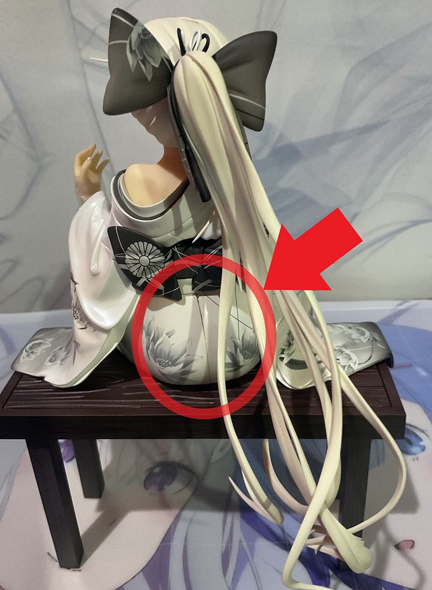
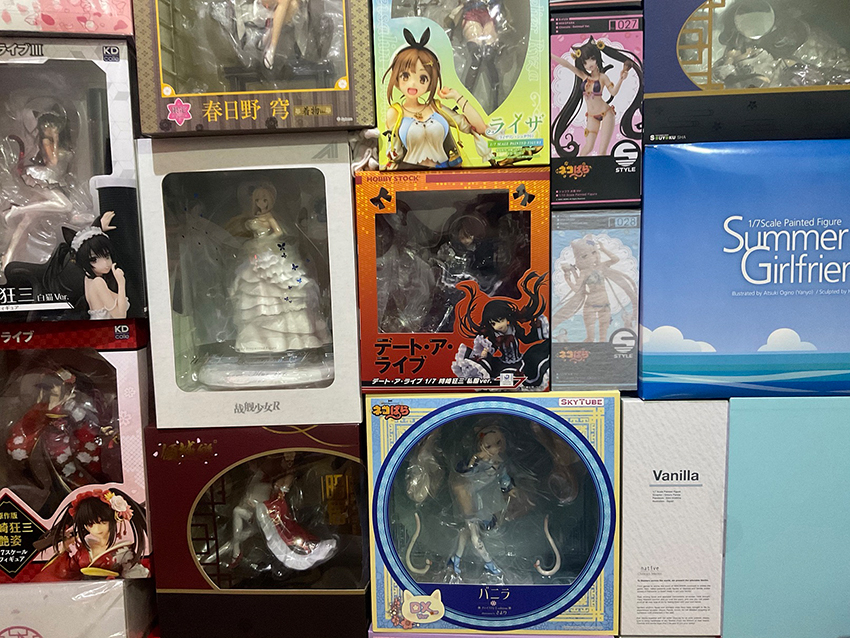

日系人形介紹
林永鴻│台北資訊處 \ 系統整合部 \ 客戶專案一課
看到第87期的針對七八十年代的公仔淺談，想要來添加點較新的公仔的資訊；由於公仔分類眾多，所以我們把機器人或非人型放一邊，僅針對日系人形(景品+PVC)的部分介紹。首先就人形分類上來說，可大致分成幾個類別，下表是各類別的簡介與近幾年的價錢：
| 分類 | 簡介 | 價錢範圍(NT$) |
| 景品 | 精緻度低但是便宜；由於一分錢一分貨，所以較容易出現細節瑕疵，推薦看過現貨再決定是否購入 | NT$350 ~ NT$1,000 |
| 一番賞 | 品質上大致可視為「大號景品」，取得有以下兩種方式 1. 抽獎 (中獎率常見約10%以下) 2. 直購 (部分商家會進貨海外直購版) ※ 想要建議直購，抽獎能中的都是天選之人 |
抽獎單抽常見 NT$200 - NT$ 500 直購價約NT$1,500 –NT$2,300(*少部分可以達到NT$5,000 up) |
| 黏土人 | 將角色Q版化至二頭身，細節會大量簡化，僅保留能辨識角色的特徵。 | NT$1,200- NT$1,600 |
| Figma | 可動人偶系列，可依照喜好擺出各種姿勢，但由於可動關節，外表會沒有靜態模型好看。 | NT$1,800- NT$2,500 |
| Figure | 精度與價錢依照廠商、尺寸、特效配件，會有很大的起伏，在文章下半來分享幾個(敬請期待~) ※尺寸上大致可分成 1/6-1/8、以及1/4兩類 |
NT$3,000- NT$10,000 (1/6~1/8) NT$7,500- NT$9,000 (1/4) |
| GK | 精緻度高、尺寸較大，依照販賣類型，可以分成兩種：完成品、未組裝白膜；未組裝白膜需要自行修整加上色，屬於高端玩家的領域。 ※未組裝白膜可以找人代工，但也是一分錢一分工，好的代工費用也是萬位數的。 |
NT$10,000~ |
| 等身大 | 少部分廠商有出這類的商品，精度最高且尺寸驚人，是個空間殺手，價錢上可能一隻可以買一輛國產車，以近期F:NEX發表的箱中彌豆子(跪姿)為例：全高64cm價錢為日幣三百萬。 | 六位數起跳~ |
對於公仔購買，第87期的介紹已經提過的通路就不多贅述，要特別提的是購買有分成預購及現貨，兩個購買方式分別有其優缺點，兩者的比較可以參考下表：
| 預購 | 現貨 | |
| 優勢 | • 價錢安定 • 貨源相對穩定 |
• 可先觀察實物品質 • 價錢易隨現貨情況漲跌(有機會低價購入) |
| 缺點 | • 需要提早下單等待發貨，等待時間從3個月到2年不等，還 有可能因各種因素導致延期 • 有機率和官方圖落差大 • 有機率出現實體品質不佳 |
• 有機率無現貨可收購，一般到貨後半年內較"有機會"找到 • 價錢易隨現貨情況漲跌(有可能漲價) |
另外購買的版本，日版雖然有較高的保值性，但相對來說，售價會比代理版增加10%~50%不等，而且日版是經由商家從日本代購回來，因此若遇到公仔有瑕疵的情況(例：斷件、溢色、蹭色及分模線)，若要申請補件或換貨相對比較麻煩。
|  | ||
| 偶發性的瑕疵(分模線沒有密合)，所以真的買了要檢查... |
介紹的部分就到這邊吧，下面跟大家分享收藏的PVC：
最後對有興趣入坑的玩家，有以下幾個建議：
• 從 景品 或是 GSC的Popup parade 系列入門，雖然精度較低，但價錢上比較親民
• 取得後請盡快做拆檢，實體店面最好是能夠現場做拆檢，早點發現早點反應
• 網購請選擇評價優良的店家或是官方店家直購，有些網路店家劣跡班班，預購拿不到貨的大有人在
• 購買前可查詢下價錢，這可以協助你選出合理的價錢，畢竟買貴你不開心，買到港版更不開心
• 網購的話，如果非大陸網站，使用「手辦」稱呼的店家大多可以直接排除
• Figure等級，預購前建議先搜尋過該廠商已發售的成品及衡量支出後再決定是否下單
• 存放時請一定要避開陽光直射的地方！
以上就是我的分享，歡迎有興趣的一同分享屬於自己的嘆息之壁(?)~
|  | 嘆息之壁的一角 |